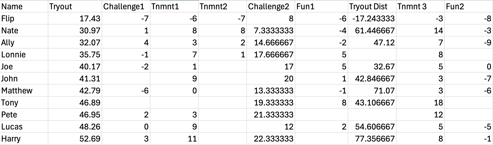
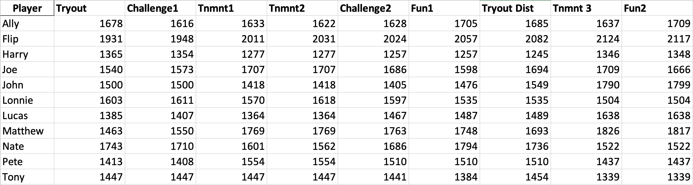

Elo-based Multiplayer Ratings System
Description: As a side project I developed a ratings system for the Utah State Disc Golf Team.
Background:I wrote an Elo-based algorithm in Python to calculate player ratings, replacing the previous manual ranking procedure. The core functionality of the system now exists as a web application for long term use by the team.
Example: Below is a set of sample player scores for a variety of rounds. The system uses these scores to calculate player ratings, which are seen in the next sheet. Finally, I've included some visualizations of the rating distributions over time.
 Technologies: React, Node.js, Python, R